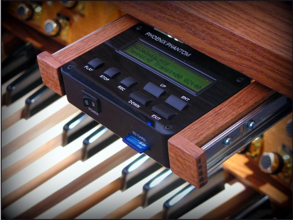
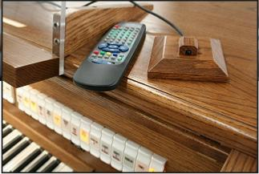

D.L. Simmons & Company Church Organs
SERVING: ALABAMA / FLORIDA / MISSISSIPPI / LOUISIANA / GEORGIA

Phoenix Phantom Midi Sequencer
This built-in MIDI sequencer is used to instantly record and playback performances on a Phoenix organ. The advantage of having it built into the organ console is that it eliminates the possibility of such a unit being stolen if it is placed on top of the console or stored in a console drawer.Store up to 200,000 music files on a standard 2 GigaByte SD memory card (included). Many complete hymn books can Phantom 2easily be recorded onto each memory stick and there is plenty of room for loads of preludes and postludes as well. This is not only useful for occasions when a real organist is unavailable, but organists find it most useful to critique their own playing, or for checking stop selections and balances from different locations in a church. Each performance is played back exactly as it was recorded including notes, tempo, stop changes, and expression pedal adjustments. Editing can be done by plugging the memory card into a standard computer using the included USB adapter. Any standard Midi software may be used.
The control technology is called 'proximity touch' and is absolutely new technology using a capacitive sensor chip. It's the same technology used in iPods. Basically, there are no moving parts. The key pad, pictured, is just a flat surface with the control names engraved on it. Controls only require a soft touch on the keypad... No more having to worry about faulty switches.
During playback by the Phoenix Phantom, all tone and volume adjustments can be made at the organ console just like an organist does while playing, plus changes in tempo (speed)3 and transposition can be made on the Phoenix Phantom control panel.
A optional remote control can be included. It can control The Phoenix Phantom from a distance of up to about 30 feet if needed.



WEBSITE CONTENTS COPYRIGHT© 2016
DL SIMMONS & COMPANY CHURCH ORGANS
DL SIMMONS & COMPANY CHURCH ORGANS